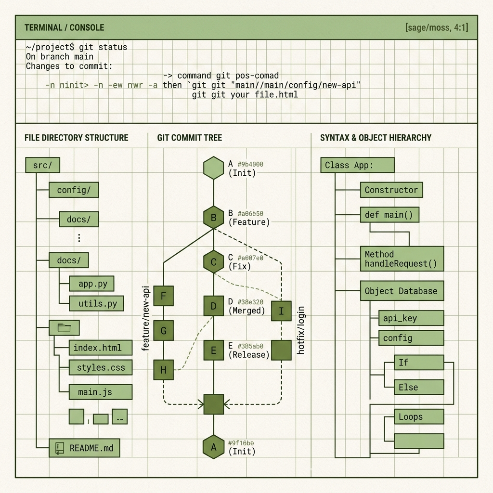

A collection of practical learnings on AI engineering, Adobe Experience Manager (AEM) Forms integration, and software system architectures.
Browse Articles About Me
A practical guide to implementing XML/JSON schema bindings and dynamic row additions in complex enterprise forms, resolving common state-loss gotchas.
How we built an evaluation pipeline for a production document search agent using synthetic queries, cosine similarities, and LLM-as-a-judge patterns.
Reflecting on a system design that over-indexed on hypothetical multi-region scale at the cost of immediate operability, developer velocity, and budget.
I am a software engineer focused on system architecture, AI enablement, and enterprise forms integration (AEM Forms). This blog is a digital workbench—a place to share raw, honest notes, retrospective reviews, and helpful solutions from actual production engineering without the hype.